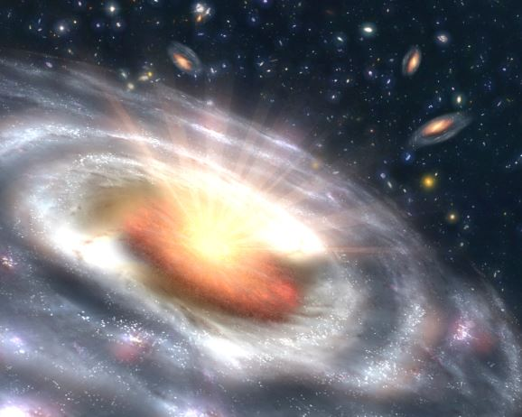

Big bang
> 빅뱅 우주론

우주가 점점 팽창하고 있다는 뒤집어 과거로 거슬러 올라갈수록 우리 우주는 점차 작아질 것이다.
그 큰 우주는 다시 작아지고 작아져 하나의 점이 되고 우리 우주 즉 그 점이 처음 탄생하는 순간이 있었을 것이다.
그렇다면 우주는 처음부터 존재하던 것이 아니라 새롭게 생겨져 난 것은 아닐까?
바로 이러한 의문들이 '빅뱅'즉 대폭발 이론을 탄생하게 만들었다.
허블의 관측 결과와 프리드만, 르메트르의 선구적 연구를 토대로 1956년 러시아 출신의 미국 학자 조지 가모프(George Gamow)는 우주의 초기 상태를 규명하려 했던 것에서 빅뱅이론을 제안하였다. 가모프는 한때 프리드만의 제자이기도 했다.
허블의 관측 결과와 프리드만, 르메트르의 선구적 연구를 토대로 1956년 러시아 출신의 미국 학자 조지 가모프(George Gamow)는 우주의 초기 상태를 규명하려 했던 것에서 빅뱅이론을 제안하였다. 가모프는 한때 프리드만의 제자이기도 했다.
> 빅뱅 이론

빅뱅 이론은 우주가 한 점으로부터 탄생한 후 지금까지도 팽창을 계속하여 오늘의 우주에 이르렀다는 이론이다.
빅뱅 이론은 현재 우주모델의 표준이 되는 것으로 상당히 강력한 과학적 증거들을 가지고 있다.
우주가 특이점에서 생겨나 지금까지 약 140억년 정도의 나이를 가졌다는 것과 양자론,
일반 상대성이론으로 플랑크 타임(10-43초) 이후의 우주 진화를 설명할 수 있고 예측할 수도 있다.
물론 예전에 평평함의 문제(Flatness problem)라는 것과 지평선 문제(Horizom problem), 자기 단극자 문제(monople problem)가 대두되어 위기를 맞기도 했으나 구스의 인플레이션이론으로 인해 어느 정도 해결이 되었다. 하지만 이 인플레이션 이론 역시 아직 완벽하지 않다는 문제점을 가지고 있다.
물론 예전에 평평함의 문제(Flatness problem)라는 것과 지평선 문제(Horizom problem), 자기 단극자 문제(monople problem)가 대두되어 위기를 맞기도 했으나 구스의 인플레이션이론으로 인해 어느 정도 해결이 되었다. 하지만 이 인플레이션 이론 역시 아직 완벽하지 않다는 문제점을 가지고 있다.
> 빅뱅 우주론과 정상 우주론